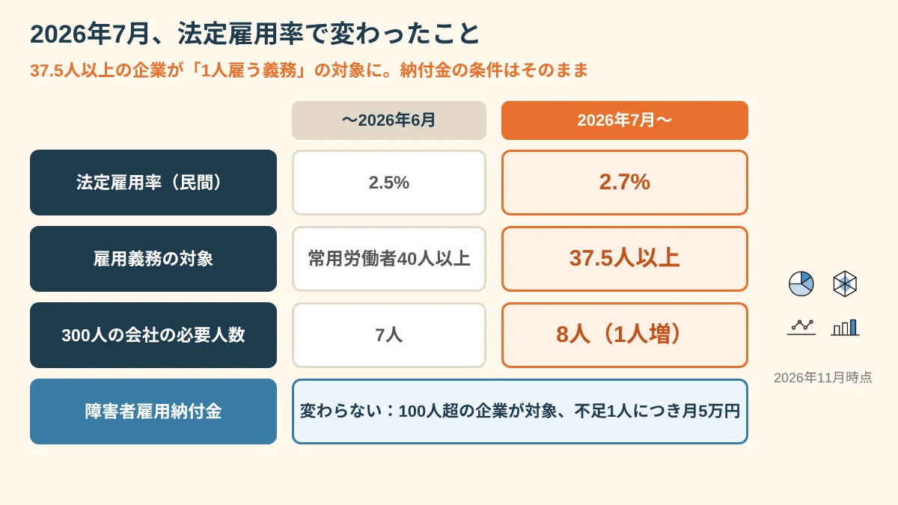
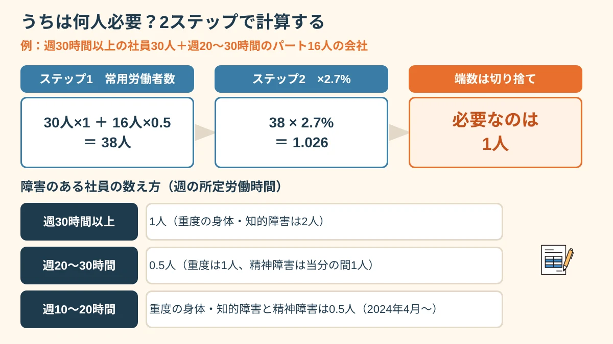
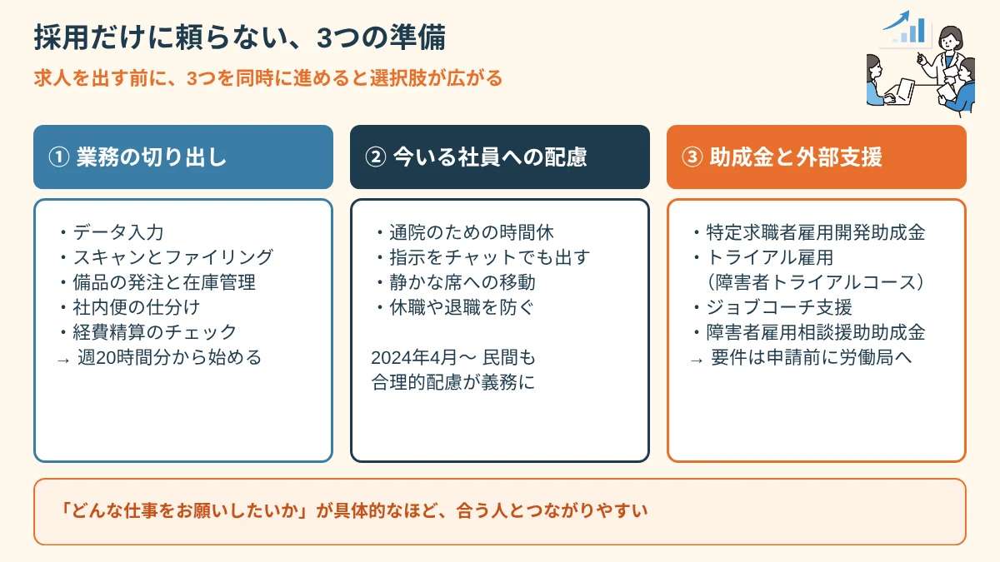
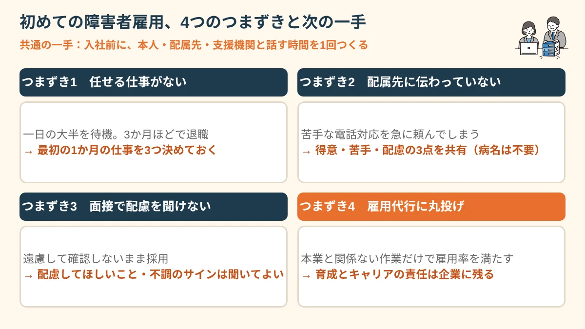
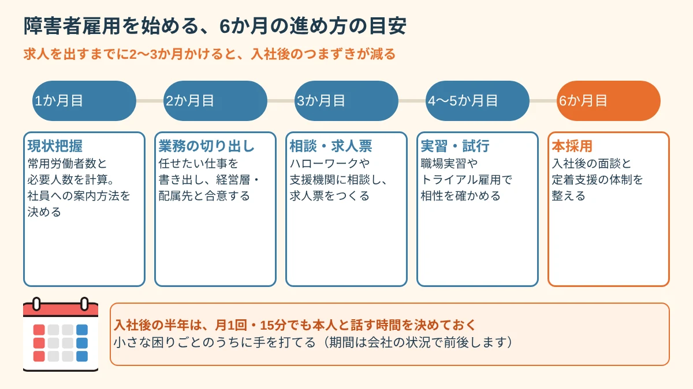

とはいえ、「結局うちは何人必要なのか」「短時間のパートはどう数えるのか」「足りないとすぐにお金を払うのか」が分からないまま、求人を出すべきか迷っている方も多いはずです。この記事では、制度で変わったことを数字で確認し、自社に必要な人数を計算したうえで、採用だけに頼らない準備と、初めての障害者雇用でつまずきやすい点を、就労支援の現場から見た順番で整理します。数字は2026年11月時点の情報です。最終的な判断の前には、厚生労働省・都道府県労働局・ハローワークの最新の発表で確認してください。
2026年7月に何が変わった？雇用率2.7%と「37.5人以上」
障害者雇用促進法では、一定の規模以上の企業に対して、従業員のうち一定の割合以上の障害のある方を雇うことを求めています。この割合が法定雇用率です。民間企業の法定雇用率は、2024年4月に2.3%から2.5%へ、2026年7月に2.7%へと段階的に引き上げられました（国・地方公共団体は3.0%、都道府県などの教育委員会は2.9%）。
変わったこと① 義務の対象になる企業の規模
雇用義務がある企業の規模は、「1÷法定雇用率」でおおよそ決まります。2.5%のときは常用労働者40人以上でしたが、2.7%では37.5人以上になりました。つまり、常用労働者が38〜39人ほどの企業は、今回はじめて「障害のある方を1人雇う義務」の対象になった可能性があります。対象になると、毎年6月1日時点の雇用状況をハローワークに報告する「障害者雇用状況報告」（いわゆる6・1報告）も求められます。
変わったこと② すでに対象だった企業の必要人数
以前から対象だった企業も、必要な人数が増えることがあります。たとえば常用労働者200人の会社は、2.5%なら5人、2.7%でも5.4人の端数を切り捨てて5人と変わりません。一方、300人の会社では7.5人→7人から、8.1人→8人へと1人増えます。「うちは足りていたはず」という企業ほど、7月以降の数字で一度計算し直しておくと安心です。
変わらないこと：納付金の対象と金額
法定雇用率を下回ったときの障害者雇用納付金は、常用労働者100人を超える企業が対象で、不足1人につき月額5万円が目安です（2026年11月時点）。100人以下の企業は、未達成でも納付金はかかりません。ただし、納付金がかからないことは「雇わなくてよい」という意味ではありません。雇用率が低い状態が続くと、ハローワークから雇入れ計画の作成を求められるなど、行政指導の対象になることがあります。
厚生労働省が2025年12月に公表した集計（2025年6月1日時点）では、民間企業で働く障害のある方は約70万4千人で過去最高、実雇用率も2.41%と過去最高でしたが、法定雇用率を達成している企業は46.0%と半分に届いていません。2.7%への引き上げで、この割合はさらに下がる可能性があります。未達成の会社は珍しくないからこそ、今から計画的に動く企業と、動かない企業の差がつきやすい時期だと言えます。

うちは何人必要？計算方法と、短時間勤務の数え方
「うちは何人雇えばいいのか」は、次の2つのステップで計算できます。ここで一番つまずきやすいのが、パートやアルバイトなど短時間勤務の人の数え方です。
ステップ1：常用労働者数を出す
1年以上雇う見込みがある人のうち、週の所定労働時間が30時間以上の人は1人、20時間以上30時間未満の人は0.5人として数えます。週20時間未満の人は含めません。正社員だけでなく、契約社員やパートも、この条件に当てはまれば含まれる点に注意してください。
ステップ2：常用労働者数×2.7%（端数は切り捨て）
たとえば、週30時間以上働く社員が30人、週20〜30時間のパートが16人いる会社なら、常用労働者数は30＋16×0.5＝38人です。38×2.7%＝1.026で、端数を切り捨てて「1人」が必要になります。7月より前の2.5%なら38×2.5%＝0.95で0人だったので、まさに今回新しく対象になったケースです。
障害のある社員の数え方
雇っている障害のある社員の数え方も、働く時間と障害の種類で変わります。週30時間以上なら原則1人、重度の身体障害・知的障害の方は2人として数えます。週20〜30時間は原則0.5人（重度の方は1人）ですが、精神障害の方は当分の間、週20〜30時間でも1人として数える特例があります。さらに2024年4月からは、週10〜20時間で働く重度の身体・知的障害の方と精神障害の方も0.5人として数えられるようになりました。
この仕組みを知らずに、「フルタイムで働ける人しか雇用率に入らない」と思い込んでいる企業は少なくありません。体調に波がある方にとっては、週20時間前後から始めて、半年ほどかけて時間を延ばしていく働き方のほうが、結果的に長く続くことがよくあります。カウントの仕組みは、数字合わせのためだけでなく、無理のない働き方を設計するための材料にもなります。
もう一つ気をつけたいのが、すでに在籍している社員の把握です。障害者手帳を持っていても、会社に伝えていない方がいる場合があります。雇用率のために申告を迫ることは本人のプライバシーを傷つけるおそれがあり、厚生労働省も把握・確認の方法についてガイドラインを示しています。全社員に向けて「働きやすさの相談窓口」を案内し、本人が自分の意思で申し出られる環境を整えるところから始めましょう。

採用だけに頼らない、3つの準備の方向性
必要な人数が分かると、多くの企業がまず「求人を出す」ことを考えます。もちろん採用は大切ですが、障害者雇用枠の求人は全国で増えていて、条件の合う方がすぐに見つかるとは限りません。準備は次の3つの方向で同時に進めると、選択肢が広がります。
① 業務の切り出し
各部署の業務を書き出して、「手順が決まっている」「締め切りに余裕がある」「一人で完結しやすい」仕事を集めます。たとえば、データ入力、書類のスキャンとファイリング、備品の発注と在庫管理、社内便の仕分け、Webサイトの更新作業、経費精算のチェックなどです。ある製造業の会社では、各部署の担当者に「本当は誰かに任せたい細かい仕事」を付箋に書き出してもらったところ、週20時間分の業務がまとまり、そのまま障害者雇用の求人票のもとになりました。
切り出しは、「簡単な仕事を寄せ集める」ことではありません。手順をマニュアルにする過程で、ベテラン社員しかできなかった仕事が見える化され、部署全体の負担が軽くなることもよくあります。
② 既存社員への合理的配慮の見直し
2024年4月から、民間の事業者にも障害のある方への合理的配慮の提供が義務になりました（障害者差別解消法の改正）。雇用の場面では、以前から障害者雇用促進法で配慮が求められています。在籍している社員に、通院のための時間単位の休み、指示を口頭ではなくチャットでも出す、静かな席への移動といった配慮をすることで、休職や退職を防げる場合があります。新しく人を採ることと同じくらい、今いる人が働き続けられることが大切です。
③ 助成金と外部支援の活用
採用や定着に使える制度は複数あります。代表的なものに、ハローワークなどの紹介で障害のある方を雇ったときの特定求職者雇用開発助成金、短期間の試行雇用から始められるトライアル雇用助成金（障害者トライアルコース）、職場適応援助者（ジョブコーチ）による職場での支援、2024年度に始まった障害者雇用相談援助助成金（相談援助事業者のサポートを受けたときの助成）などがあります。要件や金額は年度ごとに見直されるため、申請前に労働局やハローワークで必ず確認してください。
「正直、最初は『また義務が増えるのか』という気持ちが大きかったです。でも各部署に任せたい仕事を書き出してもらったら、属人化していた細かい作業が思った以上に出てきて、業務を見直すいいきっかけになりました。入社してくれた方が手順書を整えてくれたおかげで、ほかの社員も助かっています。」

初めての障害者雇用でよくある4つのつまずきと、次の一手
雇用率を満たすことだけを目標にすると、「採用はできたけれど続かない」という結果になりがちです。就労支援の現場でよく見る4つのつまずきと、その次の一手をまとめます。
つまずき1：「数合わせ」で採用し、任せる仕事がない
入社したものの任せる仕事が決まっておらず、一日の大半を待機して過ごす。本人は「役に立っていない」と感じて体調を崩し、3か月ほどで退職してしまう。残念ながら、よく見る流れです。次の一手は、入社前に「最初の1か月に任せる仕事」を3つ決めておくこと。量の多さより、毎日やることがはっきりしていることが安心につながります。
つまずき2：配属先に何も伝わっていない
人事だけが事情を知っていて、現場の上司や同僚には「新しい人が来る」としか伝わっていない。その結果、苦手な電話対応を急に頼んでしまう、といったすれ違いが起こります。本人の同意を得たうえで、配属先には「得意なこと・苦手なこと・お願いしたい配慮」の3点を共有しておきましょう。病名を共有する必要はありません。
つまずき3：面接で配慮のことを聞けない
「病気のことを聞くのは失礼では」と遠慮して、必要な配慮を確認しないまま採用してしまうケースです。病名を詳しく聞く必要はありませんが、「働くうえで配慮してほしいこと」「体調が崩れそうなときのサイン」は聞いてかまいません。就労移行支援などを利用している方なら、支援機関と一緒にまとめた自己紹介の資料を見せてもらえることもあります。
つまずき4：「雇用代行」に丸投げしてしまう
企業の代わりに農園やサテライトオフィスなどの働く場を用意し、障害のある方を「雇用率に入れられる」とうたうサービス（いわゆる障害者雇用ビジネス）が広がっています。厚生労働省は、本業と関係のない作業だけで雇用率を満たす形について、障害のある方の能力発揮やキャリア形成の面から課題があるとしており、2026年8月には事業者への届け出義務やガイドラインなどを含む規制案が審議会に示されました（2027年の法改正を目指す方向。2026年11月時点）。利用を検討する場合も、その方を自社の社員としてどう育て、どうキャリアを考えるかという雇用責任は企業に残ることを前提に判断してください。

一人で抱え込まない。社内の役割分担と相談先、6か月の進め方
制度への対応を人事担当者一人で背負うと、どこかで止まってしまいます。社内では、経営者に「必要な人数と、未達成の場合の影響」を数字で共有し、配属候補の部署長には業務の切り出しの段階から関わってもらうのが近道です。現場が「人事が勝手に決めた」と感じると、受け入れがうまくいきません。
外部の相談先（2026年11月時点）
- ハローワーク（専門援助部門）：求人の出し方、6・1報告、助成金の相談窓口
- 地域障害者職業センター：ジョブコーチ支援、雇用管理の相談
- 障害者就業・生活支援センター：仕事と生活の両面から、就職後の定着を支える
- 就労移行支援事業所：職場実習の受け入れや、採用後の定着支援で企業と連携
- 都道府県労働局・障害者雇用相談援助事業者：初めての雇用の計画づくり
6か月の進め方の目安
1か月目は現状把握です。常用労働者数と必要な人数を計算し、在籍社員への案内の方法を決めます。2か月目は業務の切り出しと、経営層・配属先との合意。3か月目にハローワークや支援機関に相談して、求人票をつくります。4〜5か月目は職場実習やトライアル雇用で、お互いの相性を確かめる期間。6か月目に本採用と、入社後の面談や定着支援の体制を整えます。会社の規模や状況によって前後しますが、「求人を出すまでに2〜3か月かける」くらいのつもりで進めると、入社後のつまずきが減ります。
障害のある方と企業の間に入ってきた立場から言うと、うまくいく職場に共通しているのは、特別な設備よりも「困ったときに話せる人がいる」ことです。最初の半年は、月に1回、15分でもいいので本人と話す時間を決めておくと、小さな困りごとのうちに手を打てます。関連して、就職後の支援の仕組みは就労定着支援の記事、グループ会社での雇用を考える場合は特例子会社の記事、働く側が障害を伝えるかどうか迷う気持ちはオープン就労とクローズ就労の記事も参考にしてください。
